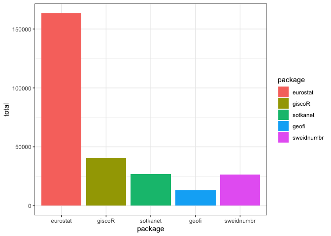

sorvi package was originally intended for hosting various algorithms for Finnish open goverment data in R. After being superseded by later rOpenGov packages that are more specialized in scope, sorvi now has a new life in hosting various functions that are helpful in rOpenGov package maintenance, authoring and preparing presentations.
Originally rOpenGov/sorvi was a fork of juusohaapanen/soRvi-dev but rOpenGov’s sorvi branch has since taken a life of its own. The fork was detached fron juusohaapanen’s branch in November 2021.
Installation
You can install the development version of sorvi from GitHub with:
# install.packages("devtools")
devtools::install_github("rOpenGov/sorvi")There is still a CRAN release version of sorvi and while it passes CRAN checks without problems it contains mostly outdated functions. It is therefore highly recommended to use development version of the package.
Using the package
Loading the package in R:
Get download statistics of eurostat-package, by year:
df <- cran_downloads(pkgs = "eurostat", sum = "by_year", use.cache = FALSE)
df
#> # A tibble: 5 × 3
#> # Groups: year [5]
#> year package n
#> <dbl> <fct> <int>
#> 1 2016 eurostat 6419
#> 2 2017 eurostat 12482
#> 3 2018 eurostat 18932
#> 4 2019 eurostat 28454
#> 5 2020 eurostat 31298Get download statistics of various rOpenGov packages over time and draw a chart:
packages <- c("eurostat", "giscoR", "sotkanet", "geofi", "sweidnumbr")
plot <- cran_downloads(pkgs = packages, sum = "total", output = "plot", use.cache = FALSE)
plot
For more (partly outdated) examples, check the tutorial page.
Contributing
-
Submit suggestions and bug reports (provide the output of
sessionInfo()andpackageVersion("sorvi")and preferably provide a reproducible example) - Send a pull request
- Star us on the Github page
- See our website for additional contact information
Acknowledgements
Kindly cite this work as follows: Leo Lahti, Juuso Parkkinen, Joona Lehtomäki, Jussi Paananen, Einari Happonen, Juuso Haapanen, Pyry Kantanen. sorvi - Finnish Open Government Data Toolkit. URL: http://ropengov.github.io/sorvi/
We are grateful to all contributors! This project is part of rOpenGov.